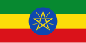
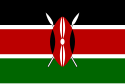
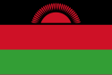
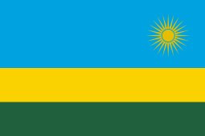
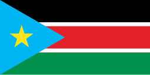
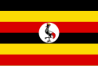

Ethiopia
- Ethiopia is the only African country that was never colonized.
- The Ethiopian calendar is about 7-8 years behind the Gregorian calendar.
- Coffee was discovered in Ethiopia! The legend says a goat herder named Kalid noticed his goats getting hyper after eating coffee berries.
- It's home to Lalibela, a city with 11 rock-hewn churches carved entirely from stone.
Kenya
- Kenya is the birthplace of long-distance running champions. The Kalenjin people are famous for dominating marathons.
- The country is home to the Great Migration, where over 1.5 million wildebeest, zebras, and gazelles move across the Serengeti and Maasai Mara.
- Nairobi has the world’s only national park within a capital city—Nairobi National Park
- Kenya is where the term "safari" (meaning journey in Swahili) originated
Malawi
- Malawi is known as the “Warm Heart of Africa” because of its friendly people.
- Lake Malawi has more fish species than any other lake in the world.
- The country has an annual bicycle festival since bicycles are the main mode of transport.
- Malawi had one of the first female presidents in Africa, Joyce Banda.
Rwanda
- Rwanda is known as the “Land of a Thousand Hills” because of its rolling landscapes.
- It's the cleanest country in Africa—plastic bags were banned in 2008.
- The country has the highest percentage of women in parliament in the world.
- Kigali, the capital, is one of the safest cities in Africa.
South Sudan
- South Sudan is the youngest country in the world, gaining independence in 2011.
- The country has one of the biggest wetlands in Africa—the Sudd.
- Cattle play a huge role in culture, and many people paint their cattle’s horns in bright colors.
- South Sudan has over 60 indigenous ethnic groups, making it one of the most diverse places in Africa.
Somalia
- Somalia has the longest coastline in mainland Africa—about 3,333 km (2,070 miles).
- The country is known as the “Nation of Poets” because poetry is deeply rooted in its culture.
- Frankincense and myrrh, famous since ancient times, come from Somalia’s trees.
- Somalia has one of the highest camel populations in the world—used for milk, transport, and trade.
Uganda
- Uganda has the world's youngest population, with over 75% of its people under 30.
- It's one of the most bio-diverse countries, home to half of the world’s remaining mountain gorillas.
- Lake Victoria, Africa’s largest lake, is shared by Uganda, Kenya, and Tanzania.
- The source of the Nile River is in Uganda, at Jinja.